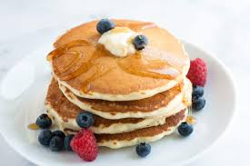

Pancakes

Description
American-style Pancakes, that are easy made and only take 20 min to prepare
A must have in everyones Breakfast repertoir
Ingredients
- 200g Flour
- 1ts. Baking powder
- a pinch Salt
- 2 Eggs
- 200 ml Milk
Steps
- mix all dry ingredients in a bowl
- add eggs and add milk slowly while stiring
- mix well until there are no more lumps. If you want you can use a hand-held mixer
- put a pan on the stove on medium heat
- add a little oil of your choice to the pan
- add a scoup of your pancake dough to the pan and fry it from both sides till its golden brown
- Congrats! You are done.